附篇1 一个婴孩的生活概述［1］
·Appendix·
泰恩先生关于婴孩智力发展的极其有趣的报告，［2］ 使我去重新审查我在37年以前对自己的一个小孩所作的观察的日记；在最近一期《精神杂志》（Mind ，第252页）里，登载着泰恩先生的这个报告的译文。我曾经获得了这些在直接进行观察方面的特殊机会，并且把一切所看出的情形都记写在日记里。我的主要目的就在于研究表情。我曾经在自己专论这个问题的书里，［3］ 借用了自己的观察记录；可是，因为我顺便注意了婴孩的其他方面的行为，所以我的观察资料，虽然它们不太重要，但是也可以充当泰恩先生所讲到的内容的补充材料，并且也可以充当以后显然无疑将在这方面所做到的观察的补充材料。根据这些对于我的小孩的直接观察，我确信，小孩的各种不同的能力和习惯是在一定的生活期间里发展起来的。
在我的婴孩出生以后的最初七天期间里，有些反射动作，例如打喷嚏、打嗝、打呵欠、伸懒腰，当然还有吮吸和叫喊，已经极其明显地表现出来。在第七天，我用一片纸去触动他的脚的露出的脚踵；他就把脚缩回去，同时脚趾挤紧在一起，正好像年纪较大的小孩在受到搔痒时候所发生的情形一样。这些反射动作很完善；这就证明，随意动作极度不明确的情形，并不是由于肌肉或者协调中心的状况来决定，而是由于意志来决定。我明显地看出，甚至在这个很早的期间里，用温暖的柔和的手去摸触婴孩的面部，也会激起他的吮吸的欲望来。应该把它看做是反射或者本能上的动作，因为我们不可能去相信，婴孩接触母亲的乳房而发生的经验和联合，会这样迅速地想到行动。这个婴孩在最初两个星期里，时常在突然发生某些声音的时候发生颤抖和霎动双眼。可以观察到，我的其他几个孩子在和他相同的年龄时候，也发生同样的现象。当这个婴孩的年龄达到66天的时候，我偶然打一次喷嚏，他就发生强烈的颤抖，皱起双眉，好像受到了惊吓，并且高声哭泣起来；此后在一小时里面，他总是处在这种状况下，而年纪较大的孩子处在这种状况下就会被称做神经质的孩子，因为每次极其微小的嘈声就会使他颤抖。在这个事件以前几天，他初次在突然有一件可看的物体出现在他面前的时候，发生颤抖；可是，此后在长久的期间里，声响使他发生颤抖和霎动眼睛的次数，要比视觉刺激使他发生这些情形的次数更加频繁得多；例如，在他的年纪达到114天的时候，我用一只装有糖果的硬纸匣在他的面部附近摇动发声，这就使他颤抖起来；可是，当我单单用这只空纸匣或者其他东西在更加接近他的面部处摇动的时候，这并不引起任何的效果来。根据这些事实可以得出结论说，眼睛霎动，主要是为了保护眼睛而发生；这种动作并不是由于经验而获得的。虽然婴孩一般对声音很敏感，但是甚至在124天的年龄时候，他仍旧还不能够决定，声音从哪里传播过来的，并且也不能够朝向声源方面瞧望。
至于说到视觉方面，那么早在婴孩出生以后9天的时候，他的双眼就已经朝向烛火凝视不动，并且一直到45天为止，好像还没有任何其他东西能够吸引他的视线；可是，到49天的时候，他的注意力曾经被一把颜色鲜艳的刷子所吸引住；这一点可以根据他的双眼凝视和双手停止动作的情现来断定。他很迟才学会用双眼去追随一个慢慢地左右摇动的物体而瞧看的本领；甚至到7个半月的时候，他还很难做到这件事情。在出生以后32天的时候，他感觉得到母亲的乳房在3～4英寸距离处向他接近；这时候他的双唇向前伸去并且仔细瞧看，因此就可以证明这一点；可是，我很怀疑这种情形是不是和视觉、还有和嗅觉有某种联系，因为他当时确实没有触碰到母亲的乳房。我完全不知道，这究竟是不是由于母亲身体所发散的热量使他嗅到或者感觉到而引起的，还是由于当时他所处的位置所形成的联合而引起的。
在出生以后的长期间里，他的四肢和身体的动作总是无目的的和不确定的，而且通常都是激烈的；只可以举出一个例外情形来：在很早的期间里，就是在他还只有40天的时候，他能够把双手举起到嘴边。当他的年龄达到77天的时候，他曾经用右手去取奶瓶（保姆时常用这个奶瓶给他吮吸），不管保姆握住他的右手或者左手；而且只有再过了一个星期以后，他方才用左手去取奶瓶，不过这件事情是我设法差使他去干的；因此，右手在本身发展方面要比左手超前一个星期。可是，后来才知道，这个婴孩是善于用左手的人；显然无疑，应该认为这是一种遗传性，因为他的外祖父、母亲和兄弟也是善于用左手的。在他的年龄达到80～90天之间，他就会把各种东西都塞进嘴里去；而且在再过两三个星期以后，他已经会用某种技巧来干这件事情；可是，他时常开头想法用鼻子去接近物体，然后再用手把它送进嘴里去。当他把我的手指抓住并且打算把它塞进嘴里去的时候，因为他自己的小手挡住了嘴，所以他就妨碍了自己去吮吸我的手指；可是到114天的时候，他在经过了多次训练以后，就迅速地把自己的手开始向下移，以便把我的手指的尖端送进嘴里去。这种动作被他重复做了几次，所以显然这不是偶然发生的，而是完全故意的。因此，双手和手腕的随意动作，要比身体和双脚的动作超前出现；虽然这些动作从外表上看来是无目的的，但是它们从很早的期间起就已经轮流出现，好像在做着走路的行动时候的样子。在这个婴孩的年龄达到4个月的时候，他时常仔细地瞧看自己的手和其他位于他附近的物体，同时他的双眼也显著地向内斜移、并且他还时常作着骇人的斜视。过了两个星期以后，就是在他的年龄达到182天的时候，我就看出，如果有物体向他的面部移近而达到他的手臂长度的距离处，那么他就企图去抓取这个物体，但是时常不能成功；对于较远的物体，他就不打算去干这件事情。我以为，不应该去怀疑，双眼向物体会聚的动作，就是激发双手行动的原因。因此，虽然这个婴孩很早就开始运用双手，但是在这些动作里一点也没有表现出什么定规来。在他的年龄达到2岁4个月的时候，他会抓住铅笔、钢笔和其他物体，但是显著地不及他的妹妹那样灵活和能干；当时他的妹妹的年龄是14个月，已经表现出相当强烈的对于处理物体方面的天生能力来。
愤怒——很难确定这个婴孩在什么年龄第一次发生愤怒；在他出生以后8天的时候，他在哭泣发作以前就皱起双眉，并且把眼睛周围的皮肤皱缩起来；可能认为这种情形是由于疼痛或者苦恼而发生，却不是由于愤怒而发生。在他的年龄大概是10星期时候，在全部喂奶的期间里，当他吮吸到较冷的牛奶时候，他的前额就紧蹙起来；当时他好像成年人因为强迫他去干一件使他不高兴的事情而感到伤心的样子。当他的年龄大约是4个月的时候，说不定还在更加早些的时候，可以根据他的面部和头皮的充血情形来看出，他开始激烈地发怒起来。只要是不大的原因就足够引起他发生这种情况；例如，在他的年龄略微大于7个月的时候，他由于企图用手抓取一只柠檬遭到失败，而失望地发出尖叫来。在11个月的年龄时候，如果拿给他的玩具并不是他想要的，那么他就会把这个玩具推开和敲打它；我以为，这种行为就是愤怒的本能上的特征，而且不应该认为这个婴孩由于打算使玩具发生疼痛而这样干的。婴孩的这种本能，好像是小鳄鱼在破卵而出以后慢慢地把双颚颤动发声的样子。在他的年龄是2岁又3个月的时候，他就发生出一种把书籍和棍棒抛掷到那些欺侮他的人身上去的癖性；我的其他的几个孩子也发生这种情形；从另一方面看来，我始终一点也不能看出我的女儿在这个年龄时候具有这种癖性；这就使我认为，抛掷东西的癖性是由男孩遗传下去的。
恐惧——这种感情极可能是小孩最早发生的感情之一；根据下面的情形就可以明白这一点，就是：早在婴孩出生以后几个星期时候，他们发生颤抖，此后在出现任何突然发生的音响时候，他们就哭泣起来。在我的婴孩的年龄还没有满4个半月以前，我多次在他的身旁发出各种奇怪的高声；这些声音使他感觉到是适当的开玩笑；可是，到了这个年龄时候，我有一次发出一种以前没有听到过的响亮的打鼾声来，于是他马上变得严肃起来，此后就发声大哭。过了两三天以后，我由于忘记了这件事，又发出这种打鼾声来，于是又发生了同样的结果。大约在相同的时候（就是在他出生以后137天的时候），我有一次转过身子，开始用背部朝着他退走过去，此后又站定不动；这时候，他显得很严肃，并且很是惊奇；要是我不把身体转过去用面部朝着他，那么他一定就要哭起来；当时他的面部立刻就露出微笑来。大家知道，年纪大的小孩会强烈发生模糊不明的恐惧；例如，他们害怕黑暗或者大房间里的黑暗的角落等。我可以举出一个事例来作为例子；当时我带领上面所说的我的婴孩到动物园里去；他的年龄是2
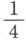
岁。他高兴地瞧着他以前已经认识的一切走兽，例如鹿、羚羊等，还有一切鸟类，甚至是鸵鸟，但是在看到兽栏里的各种巨大野兽的时候就感到惊惶不安。此后他就时常说，要再去瞧那些走兽，但是不要再看到那些住在“小房子”（兽栏）里的野兽；我们绝不能够说明这种恐惧的原因。是不是应该去假定说，小孩的这些模糊的、但是完全现实的恐惧情形，完全不是由于经验而发生的，却是遗传下来的对现实的危险发生害怕和原始的古代所积累下来的旧有成见的结果呢？我们关于过去良好发展的特征会遗传下去的知识，使我们认为，这些恐惧情形应该在幼年期间里出现，而后来则消失去。愉快的感觉——根据小孩在喂乳时候所呈现的迷糊的眼光，可以推测说，他们同时在发生愉快的感觉。我们所谈到的这个婴孩，在出生以后45天的时候发生微笑；而另一个婴孩则在46天的时候，发出了那些已经证明是由于愉快感觉而引起的真正微笑，因为同时这两个小孩的双眼变得发亮起来，而眼睑则略微闭起。他们主要是在望见自己的母亲时候发出微笑；这就证明这些微笑的性质是有意识的；可是，这个婴孩也时常在过了一段时间以后，由于某种内部的愉快感情而微笑起来，不过当时绝没有发生出任何一种设法使他兴奋或者高兴的事情来。在他的年龄达到110天的时候，如果有人把围涎布突然蒙在他的脸上，接着又很快除下，那么这种玩意儿就会使他很高兴；如果我把自己的面部迅速向他接近过去，同时把围涎布蒙在自己脸上和突然除下，那么也同样会使他高兴。同时，他还发出一种好像是初生的声笑的声音来。在这种情况下，突然发生的现象就是一种使他高兴的基本原因。在成年人方面，也可以时常观察到，在他们对开玩笑发生反应的时候，就发生这种情形。我以为，在这些由于突然露出面部而发生的高兴情形以前三、四星期里，他好像已经理解到，别人轻轻抚摸他的鼻子和面颊的举动，是一种良好的开玩笑。起初，我由于婴孩在略微过了三个月的年龄时候就会理解到可笑的事情这一点，而感到极度惊奇。可是，同时也应该记住，小猫和小狗在很幼小的时候就已经开始作玩耍了。他在4个月的年龄时候，极其明确地表现出一种要倾听钢琴演奏的愿望来；如果把他在更早的时候对于鲜艳的颜色发生兴趣的情形除开不算，那么显然现在这种情形就可说是他的美感的最早表现了。
恋情的感觉——如果我们根据这个婴孩在2个月的年龄以前对着那些看护他的人发生微笑这一点，来正当地断定他具有恋情的感觉，那么这种感觉极可能发生在很早的生活期间里，不过我还没有获得任何明确的证据，而可以用来证明婴孩在4个月的年龄时候能够辨别和认清任何一个人。可是，只有在他的年龄略微大于一周岁的时候，他方才开始自发地表现出明显的恋情的特征来；这些特征就表现在：他多次在保姆离开了一段时间而回来的时候，开始去吻保姆。每次在保姆装出要哭泣的样子时候，他就对保姆发生同情感，当时他的面部采取忧郁的表情，嘴略微收缩起来。他的年龄达到15
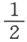
个月的时候，当我去抚爱大洋娃或者去握他的小妹妹的手的时候，他就表现出嫉妒的特征来。在观察到狗的嫉妒感情怎样强烈地表现出来的时候，就可以预料到，如果以为个体发育在重现出系统发育来的说法是正确的话，还有如果能够用可靠的办法来做试验的话，那么小孩的这种感情应该在更早于刚才所讲述到的年龄时候就表现出来。观念的联合、理性等——根据我所能观察到的情形说来，他的特殊的实际思考所表现出来的第一个行动，亦即我在前面已经写过的情形，在于他企图抓住我的手指；以便把指尖推送到他的嘴里去；这件事情发生在他出生以后114天的时候。他在4个半月的年龄时候，多次由于看到了镜子里的我和他自己的像而发生微笑，并且显然无疑把这些人像当作是实际的人；可是，当他听到我的声音在他背后发出来的时候，他就表现出理解上的惊奇来。也像其他一切的小孩一样，他很喜爱观看镜子里的自己的像；而且以后在他还不到两个月的时候，他已经清楚地理解到这只不过是人像，因为如果我悄悄地对他做出任何一种怪脸来，那么他马上会把身子转过来，向我瞧看。可是，在7个月的年龄时候，他在游乐的时候，隔着巨大的玻璃看到了我，也怀疑起我是不是镜子里的像来，因此就发生了困惑。我的另一个婴孩，就是小女孩，在一周岁的年龄时候，还没有表现出这种理解力来；当她看到镜子里的人像在向她迎面走过来的时候，她只是表示出犹疑不决的样子。我曾经观察过最高等的猿；它们用另外的方式去对付一面小镜子，就是：它们把手去按住镜子，用这种动作来表明它们理解到这是怎样一回事情；可是，它们并没有兴趣去细瞧镜子里的自己的像，反而发怒起来，不愿再去看它。
这个婴孩在5个月年龄时候，并不依存于任何的教育，［4］ 就开始把观念联合起来；例如，只要把帽子一戴在他的头上和把大衣一穿在他的身上，如果不马上（抱着他）去散步，那么他就会开始撒起娇来。在他的年龄正巧是七足月的时候，他已经能够毫不错失地把保姆和她的姓名联合起来，并且在我喊出保姆的名字时候，就去找寻她。另一个婴孩由于把头部左右摇动而高兴起来；我模仿着他的动作，并且发出“摇头”的言语，去鼓励他做这个动作；在7个月的年龄时候，他有时听到第一次请求，用不到再看到年纪大的人所作的任何指示，也会做出这种动作来。在以后的4个月里，我们所讲到的这个婴孩就把很多事物与动作去和言语联合起来；例如，在有人要他去吻某一个人的时候，他就平静起来，同时伸出双唇；还有在看到炭篓子或者泼出的水时候，因为他已经学会这些东西是污秽，所以他就摇起头来，并且用不满意的声调发出“啊嘿”的呼声。我还可以补充说，在他的年龄达到十足月还差几天的时候，他能够把自己的名字和镜子里的自己的像联合起来；当有人呼喊他的名字时候，他就转身向镜子方面去；甚至在他离开呼喊的人不远的情形下，也是这样。在他十足月以后几天，他自发地学习到，当有人把手或者其他任何一种物体在他的面前的墙壁上投射出影子来的时候，他就一定向身背后去找寻这只手或者物体。在他还没有满一足岁的时候，只要有两三次间断地向他重复作出某种简短的提议，就已经足够使这个提议以联合的观念形式坚牢地固定在他的头脑里。泰恩先生叙述到，婴孩容易发生观念之间的联合；在我的婴孩方面，也可以观察到这种情形，不过那时候他的年龄要比泰恩先生所说的大得多；可是也可能他的初期的联合表现当时没有被我觉察到。在一些情形里，迅速而且容易由于教育而发生联合的观念；而在另一些情形里，则自发地获得这些观念；我以为，这种迅速和容易的情形，好像是婴孩的头脑和我曾经观察到的最聪敏的成年狗的头脑之间所存在着的最明显地表现出来的差异。在把这些资料去和穆比乌斯（Möbius）教授所获得的资料（穆比乌斯：Die Bewegungen der Thiere etc ，1873年，第11页）作对比以后，就可以看出，婴孩的头脑和梭鱼的头脑有多么显著的不同。穆比乌斯曾经把一条梭鱼放在养鱼缸里的用玻璃板隔开的一部分里，而在另一部分里则放几条鮈（Gobio fluviatilis ）；这条梭鱼在一连三个月里，总是朝着玻璃隔板撞过去，直到自己头昏无力为止；最后它由于进攻总是受到这种处罚而改掉了原来的习惯；此后，又把它和同样的几条鮈放在一只没有玻璃隔板的养鱼缸里；这时候，它已经不再表现出以前进攻它们时候所采取的无意义的顽强精神来。
正像泰恩先生所看出的情形一样，小孩在最早的年龄时候就表现出好奇心来；这种好奇心对于他们的智力发展极其重要。可是，我一点也没有进行过这方面的专门观察。在此期间，也开始表现出模仿的行为来。当我的婴孩的年龄只不过4个月的时候，我觉得，他企图要发出声音来；可是，也可能我在自己的判断方面发生了错误，因为我不十分相信他当时真的在做这件事情；以后直到他满十足月的时候，我方才以为他在这样做。他在11
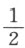
个月的年龄时候，就毫不困难地模仿各种各样的动作；例如，在看到污秽的东西时候，就一面摇头和一面喊出，“啊嘿”（ah）来；或者在念着拙劣的少童诗的诗句“瞧这个，瞧这个，把字母T描下来”的时候，就慢慢地和恰当地把一只手的食指贴近在另一只手的掌心。去察看他的面部在成功地完成了这一类动作以后所发生的满意的表情，真是很有趣的事情。我不知道，是不是也值得把那些表明幼年的小孩具有良好的记忆力的事实提出来谈谈；例如，当我的小孩的年龄达到3岁又23天的时候，有一次把他的祖父的画像给他看，当时他已经有6个月没有看见祖父，但是他马上认出他，并且列举出许多在他和祖父最后会见时候所发生的事件，而这个小孩周围的人在这6个月的期间里一次也没有提到过这件事情。
道德感——在这个婴孩的年龄达到13个月的时候，我看出他的道德感的第一批特征表现出来；有一次我说道：“杜但（Doddy，这是他的名字）不愿意吻爸爸——坏杜但。”由于我说了这几个字，他显然无疑变得有些难为情起来；接着在我回转到自己的安乐椅那里去的时候，他就伸出双唇来，表示出他准备来吻我的姿态；此后，他生气起来，把手摇动，一直到我向他走近去和让他能够吻到我的时候方才息怒。和我妥协这件事情，极可能使他发生满意的感觉，因为过了几天以后，当他假装生气、打我的耳光而且硬要接吻的时候，再重现出这一幕来；后来也时常发生这种情形。在这个年龄时候，可以很容易去影响婴孩的感情，并且差使他去干一切随便什么事情。在他的年龄满2岁3个月的时候，他曾经把最后一块小姜饼送给自己的小妹妹吃，此后就极其满意地喊叫道：“啊，善良的、善良的杜但。”过了两个月以后，当有人对他嘲笑的时候，他就开始发出敏感的反应，同时他的怀疑心理很强烈，以至于时常以为旁人的笑声和谈话都是针对着他似的。在他的年龄再稍大的时候（在2岁7个半月的时候），我有一次遇见他从餐室里走出来，并且注意到他的双眼发出不寻常的光辉，而且做出一种奇怪的、不自然的、更加正确的说来是假装的举动来；我马上就走向餐室里去，以便认明什么人在那里；结果发现，这个孩子抓去了一把捣碎的砂糖；这件事情以前是不准他做的。不能用害怕这一点去说明他这种奇怪的举动，因为他从来没有受到过责备；我以为，在这种情况下，可以说是愉快的兴奋状况和良心的意识之间所发生的斗争的表现。过了两个星期以后，我正巧在他走出这个餐室时候遇见他，同时察看他的围涎布被整齐地卷起来；这时候他的举动也很奇怪，因此我就决定要查看一下这块卷起来的围涎布，不过他已经说过，在它里面没有藏着什么东西，同时还用命令的口气反复喊道：“走开”；我发现，在他的围涎布上满布着咸黄瓜汁的斑点；因此，在这里就出现了狡猾地考虑过的欺骗。因为这个小孩已经受到教养，而且对于他的性格的优点方面特别发生反响，所以他马上就变得正像可能使人盼望到的那样真诚、坦白和可爱。
天真、害羞——在长期和幼小的孩子相处在一起的时候，就一定会注意到，他们完全缺乏困惑的状态，因此他们可以长久不眨眼睛，而瞧望着陌生人的面部；而成年人则只有在瞧望动物或者不活动的物体时候，才可能不发生困惑。据我看来，这种情形的发生原因，就在于：幼小的孩子绝没有想到自己，因此就不表现出害羞来，不过他们有时也害怕陌生人。我的婴孩在大约2岁3个月的年纪时候，有初次害羞的表现；我观察到，这些表现是在我离开家里10天以后再见的时候对我发生的；我看出，他的双眼起初逃避开我的视线，但是很快他就走近过来，坐在我的膝盖上，吻着我，于是一切难为情的痕迹就都消散了。
交际能力——在出生以后长久期间里并没有眼泪随着哭泣出现；哭泣的声音，或者更加正确的说来是尖锐的哭喊声音，当然是被本能地发出来的，但是也表明出有苦恼存在着。后来，发出的声音渐渐地由于那些引起它们的原因——饥饿或者疼痛——的不同，而开始显得彼此不同起来。在本文所叙述的婴孩年龄达到11个月的时候，他的哭声就显著不同；据我所知，在其他的婴孩的年龄比他更早的时候，也可以观察到这种哭声不同的情形。除此以外，这个婴孩很快学会了依照不同情况，为了要使人理解到他想要什么东西，而作有意识的哭泣，或者皱脸。在他的年龄达到46天的时候，他开始发出几种使他高兴而毫无意义的声音来；这些声音很快就变得彼此不同起来。在这个婴孩的年龄达到113天的时候，可以观察到他的初次出现的声笑；其他的婴孩的声笑在更加早得多的年龄时候就出现了。正像我已经指出过的，我觉得，婴孩在这个年龄时候企图要去模仿声音；在较后的期间里，他的确也就这样做了。他在5个半月的年龄时候，十分明确地发出一个声音“da”（“达”），同时并没有任何意义包含在这个声音里。他在略大于一足岁的时候，就用手势来帮助表达出自己的欲望来；可以举出下面一件事情作为例子：有一次他把一片纸举起来，把它给我，同时用手指着炉火，因为他时常看见纸张在炉火上燃烧的情形，而且他很高兴看到这件事情。在一岁的年龄时候，他作出一些重大的成就；例如他会创造出一个字“mam”（“妈姆”）；依照他的语言，这个字就是“食物”的意思；可是，我始终不知道，为什么会使他发出这个字来。后来，他在感到饥饿的时候，不去采取哭泣的办法，而改用这个新创的字以命令的声调发出，或者是作为动词，同时想要用它来说：“给我吃”。因此，这个字符合于泰恩先生所讲到的那个婴孩在较大的年龄14个月时候所使用的字“ham”［“哈姆”，意译“火腿”］。可是，我的婴孩也把他的“mam”这个字作为一个具有很多意义的名词来使用；例如，他把糖（sugar）叫做“su-mam”（“苏-妈姆”）；后来，当他学会一个字“黑”（black）的时候，他就把甘草叫做“black-su-mam”，就是“黑色的甜食物”。
有一种情况使我特别感到惊奇，就是：在想要吃东西和同时使用“mam”这个字的时候（在下面举出我当时在观察以后立刻写下的记录），在这个字的末尾随着发出特别显著的疑问声调来。起初他主要是在认清了周围的人们当中的某一个人或者看见镜子里的自己的像的时候，使用“啊嘿”（ah）这个声音；以后这个声音开始伴随着声音里的喊叫的热情同时发出，好像成年人在惊奇时候所发出的声音一样。我在自己的记录里指出说，这种音调显然是本能地发生出来的；我懊悔当时自己没有在这方面作出补充的观察来。可是，我在自己的记录里指出说，在较后的期间里，即在18～21个月的年龄时候，这个婴孩在拒绝去做某一件事情的时候，就显著地改变声音，并且发出诉苦的抗议的叫喊声，表示出“我不愿意”的意思来；声音里的音调变化情形，甚至好像是在说“就是，不愿意”。泰恩先生也认为，他所观察过的一个小女孩在她学会讲话以前的声音里的个别音调的表现力，具有重大的意义。我的婴孩在请求吃东西而发出“mam”这个字来的时候，也发出疑问的声音；这种声音是特别有趣的，因为如果有人发出个别的字或者类似的简短的提议来，那么他就会发现，音乐上的声音的升高到这个字的末尾达到最大的高度。当时我没有注意到这种现象符合于我所坚持的见解，就是我认为，在人类还没有学会用音节分明的语言来谈话以前，他已经能发出个别的、好像真正音乐上的音阶的音调来，正像类人猿长臂猿属（Hylobates ）所发生的情形一样。
最后，应该指出，这种加强婴孩去和周围的人们建立联系用的本能的叫喊，就是婴孩的欲望的最早的表现手段；这种叫喊逐渐地一部分在无意识地发生变化，而另一部分则据我看来是在有意识地发生变化。婴孩的面部表情的无意识的变化、姿态、音调加强的特征，最后还有婴孩本身所创造的而有最普遍意义的字汇，含有更加正确的内容，而且是模仿他所听到的说话而获得的字汇，在实现着他的欲望的表现；正就是这些字汇被婴孩异常迅速地吸收到头脑里去。我以为，婴孩在很早的发育期间里，就已经以某种程度根据那些保育他的人的面部表情而理解到这些人的意图和感情。婴孩的微笑本身，就已经证明了我们差不多不能对它发生任何怀疑；并且我以为，我在本文里所讲述的这个婴孩，在略微大于5个月的年龄时候，已经理解到同情心的表现。在他的年龄达到6个月11天的时候，他由于看到他的保姆假装哭泣的样子而对她表现出明确的同情心来。在他的年龄大约是一岁的时候，他仔细研看着那些向他瞧看的人的面部表情，而且由于成功地完成了一种对他说来是新的任务而感到满意。甚至在6个月的这样早的年龄，他显然已经对他周围的个别的人表示同情：不仅是由于他们的面部特征，而且也是由于他们的面部表情而表示同情。在他的年龄还不到一周岁的时候，他对音调和姿态的理解力，也像对很多字汇和简短提议的理解力一样良好。在他创造出自己的第一个字“mam”以前5个月里，他只能够理解一个字，就是他的保姆的名字；这一点也是可以料想得到的，因为我们知道，比较低等的动物也容易学会理解个别发出的单字。
* * * *
С. Г. 格列尔斯坦教授对附篇的附注
［1］达尔文这篇文章的题目叫做“A Biographical Sketch of an Infant ”（一个婴孩的生活概述）。我们就按照这个题目直译成“
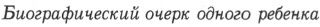
”。如果根据这篇文章的内容来看，那么就应该比较正确地把它叫做“对于我的婴孩的发育的观察”（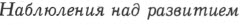
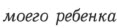
）。达尔文最初把这篇文章发表在《精神》杂志（Mind ，《心理学与哲学季刊》，第2卷，1877年7月，第285—291页）里。在这1877年里，这篇文章又被译成法文，转载在法国《科学》杂志里（Revue Scientifique ，第2类，第7年，第2期）。1878年，俄国读者得到这篇文章在俄国《莫斯科医学杂志》（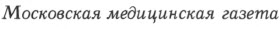
）上转载出消息。这篇文章的俄译文，是由莫斯科的医师兼人类学家别恩秦格尔（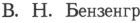
）所作；他还写了下面一段序文：“我在去年把泰恩的美妙的论文的俄译文寄送给《莫斯科医学杂志》编辑部（请大家原谅我采用了“美妙的”这个形容词，但是我以为，在科学论文方面，也像在任何文艺作品方面一样，具有很多美妙的地方）；这篇论文的题目是《论婴孩的言语的发展》（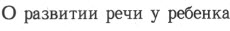
，参看《莫斯科医学杂志》，第24期，1876年）；当时我以为，在极短的期间里，一定会有极多的观察者来批评这篇文章；可是，我应该自认，我绝没有盼望到，现代最有天才的观察者查理士·达尔文会用这样迅速、这样富于同情而且这样响亮的方式来评论这篇文章。当然，达尔文的评论是用不到我们来作任何的注解的；可是，除了著名的人名以外，事情本身也是不说自明的。这位思想家的观察琐细、细致而且几乎微细难辨，还有他的美学上的描写，使自然科学的观察者感到惊奇，并且使后者回忆到，他曾经也做过同类的观察，不过是为了不同的目的而做的；他在和公文‘宝藏’脱离关系以后，就快乐地提出了自己的意见，并且他也遇到了合适的机会，他不仅不鄙视进行这些观察，而且现在由于他的崇高的声望，又抱着热爱和狂喜的心情，开始去进行同样的观察，并且成年累月地去干这些工作；由于这些劳动的结果，当然不会单单像现在这样出现人类心理学方面的不可消灭的一页；这种心理学不是根据于形而上学的挣扎，而是根据于直接的观察，根据于科学的、自然史的心理学试验。天才的人物具有一个特点，就是：他们甚至不讨厌一根在他脚旁拾到的最小的麦秆，而且知道这根麦杆在他们所筑造的房屋里可以占有怎样的位置。可是，我们就不得不在这里的莫斯科地方，带着悲痛的心情去听取一种高傲地耸起双肩的人所发表的意见，就是：不值得去研究这些琐细的事情，这些微小的事情，而这些事情更加不值得在重要的杂志里占有地位；我们高兴地把达尔文所写的这篇短文送给这些头脑愚笨的自作聪明的专家们来作为回答，同时盼望《莫斯科医学杂志》编辑部能够愉快地把这篇短文也像泰恩的论文一样登载在自己的杂志里。”别恩秦格尔对于这篇文章的译文，有很多地方不确切，而且译得马马虎虎，因此我们现在不能感到满意。1881年，达尔文这一篇文章又被人重译成俄文，以单独的小册子出版，书名改为“
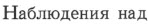
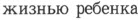
”（《对于婴孩生活的观察》）；这次的译文虽然有些改进，但仍旧绝不是完善的；这次没有印出译者的姓名来（圣彼得堡，哈恩博士印刷所，1881年）。在同一年份（1881年3月）里，有人在《语言杂志》（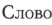
）里发表一篇对这个小册子的简短评论。这篇评论文章的著者（也是隐名的人）写道：这个小册子没有独立的科学意义，而它的趣味也只不过是作为《人类和动物的表情》这本书的补充罢了；根据他的说法，这个小册子里的大部分观察资料，已经被包含在《人类和动物的表情》这本书里了。从此以后，达尔文的这篇文章没有在著作界受到专门的评论，只有在有关幼龄儿童的心理的专门著作里，才偶尔出现一些引用这篇文章里的文字。1900年，在俄国出版过一个小册子——伊坡里特·泰恩和查理士·达尔文：《对于婴孩生活的观察》（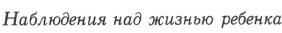
，第二版，增订本，圣彼得堡，纳杜特金出版社，1900年）。在把1881和1900两年所出版的小册子来对照时候，可以证明它们差不多是完全相同的。显然，它的译者就是同一个隐名的著者。如果我们用现代唯物主义科学关于幼年儿童的生理与心理特征方面的观点，去评定达尔文的这篇文章，那么就应该承认，达尔文所讲到的基本事实，直到今天还没有丧失它的意义。达尔文所写的关于婴孩在出生以后的最初一个星期里的反射动作的话，从事实上看来，是不容争辩的，而且他所作的关于这些动作具有本能上的和反射的性质这个结论，已经被一切研究过初生婴孩的行为的专家所证实。达尔文所讲到的关于婴孩对视觉与听觉刺激物发生反应的最早时刻的事实，基本上是不容怀疑的。可是，现在已经可以根据大量观察资料来确定，在某些只不过是被达尔文顺便指出的幼年婴孩的反应的最初发生方面，还存在着很多个体上的差异。达尔文对于4个月的婴孩的眼睛转动和手的移动的配合方面所作的观察，也是和后来其他研究家们所获得的事实互相符合的。至于说到婴孩的愤怒、恐惧、快乐、恋情的情绪和他们的表现方面，那么从纯粹叙述方面看来，达尔文所讲到的事实也没有失去它的意义；可是，达尔文在这篇文章里却拒绝去作这些事实的说明。达尔文用很简短的和不明显的方式，来讲述了那些有关婴孩的思维发展和第一批机敏要素出现方面的资料；因此，这部分资料现在就没有科学上的价值。至于说到幼龄儿童的表情动作和它们的发展，那么达尔文在现在这篇文章里所叙述的事实大部分的确都已经包含在《人类和动物的表情》这本书里了。应该认为，这篇文章就是《人类和动物的表情》这本书里所发展的几个原理的自然继续和发展；而《人类和动物的表情》则又是达尔文的名著《人类的起源和性选择》里的最主要的观念的发展。
［2］达尔文在这里所举出的伊坡里特·泰恩的论文，最初是被发表在《法国和国外哲学评论杂志》里（Revue philosophique de la France et de l'étranger ，1876年，第8期）。在这一年，别恩秦格尔把它译成俄文，并且登载在《莫斯科医学杂志》（1876年，第24期）里；它的俄文译名是“
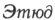
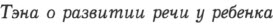
”（《泰恩论婴孩言语的发展》）。1900年，泰恩的这篇文章的俄译文又和达尔文的现在这篇文章合并在一起出版（参看第1条俄译者注）。［3］这里所说的书，就是指达尔文所著的《人类和动物的表情》（1872年出版）。
［4］达尔文写到婴孩的观念的联合是自发的、不依存于教育而形成起来的。在这里，达尔文的见解就具有内部的矛盾，不够彻底。婴孩的联想联系，是由于他的生活经验逐渐发展、他和愈来愈多的各种不同的、具有条件刺激物性质的外界事物的接触结果而发生的。谢切诺夫当时已经卓越地分析了这个过程；他打下了儿童个体发育学说的真正唯物主义基础。天才的巴甫洛夫条件反射学说，也曾经被应用在儿童年龄的研究方面［克拉斯诺戈尔斯基（
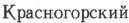
）、伊凡诺夫-斯莫林斯基（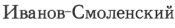
）、舍洛瓦诺夫（ ）等人的研究］。达尔文的观察资料无论是怎样的精确，它们还是基本上具有纯粹叙述的性质；因为在达尔文的时代，缺乏关于婴孩的生理研究方法，所以这就使达尔文的这个著作的科学意义受到了限制。